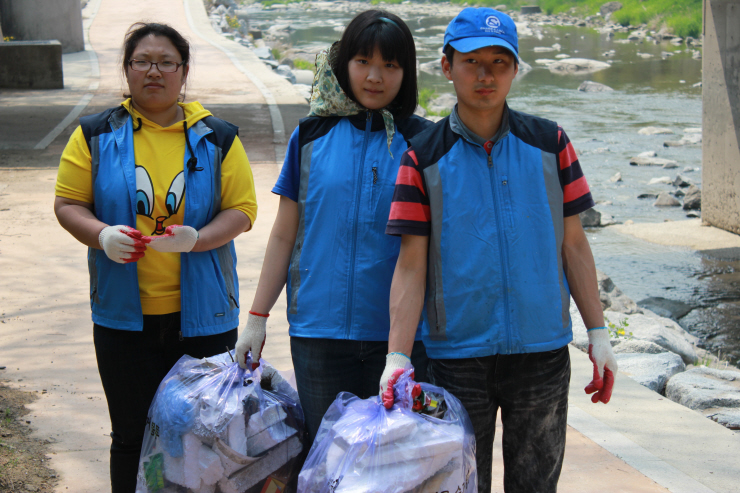

<div id="page-activity3" class="flex flex-col flex-grow w-full py-8 bg-gray-50">
    <div class="container mx-auto px-4 max-w-4xl">
        <div class="bg-white rounded-lg shadow-sm border border-gray-200 p-6 md:p-10">
            <!-- 헤더 영역 -->
            <div class="border-b pb-4 mb-6">
                <span class="inline-block bg-green-100 text-green-800 text-xs px-2 py-1 rounded-full mb-2">환경 정화</span>
                <h1 class="text-2xl md:text-3xl font-bold mb-3">깨끗한 우리 동네 만들기</h1>
            </div>
            
            <div class="prose max-w-none text-gray-700 leading-relaxed mb-8">
                <!-- 활동 이미지 -->
                
                
                <!-- 활동 내용 -->
                <p class="mb-4">
                    화창한 날씨 속에서, 은빛금빛 봉사단은 수동천 산책로와 인근 근린공원 일대를 돌며 '깨끗한 우리 동네 만들기' 환경 정화 활동을 진행했습니다.
                </p>
                <p class="mb-4">
                    단원들은 산책로 구석구석에 버려진 비닐과 플라스틱 쓰레기를 줍고, 오랫동안 방치되어 있던 폐기물을 수거하며 구슬땀을 흘렸습니다. 또한, 정화 작업이 끝난 후에는 공원 한편의 공터에 예쁜 꽃묘목들을 심어 지역 주민들이 산책하며 눈으로 즐길 수 있는 작은 꽃밭도 새롭게 조성했습니다.
                </p>
                <p class="mb-4">
                    깨끗해진 거리를 보며 밝게 웃으며 감사 인사를 건네주시는 동네 주민분들 덕분에 단원들 모두 더욱 큰 보람을 느낄 수 있었습니다. 앞으로도 우리가 살아가는 터전을 맑고 푸르게 가꾸는 일에 묵묵히 앞장서는 은빛금빛 봉사단이 되겠습니다. 함께 땀 흘려주신 모든 분들 정말 고생 많으셨습니다!
                </p>
            </div>
            
            <!-- 하단 네비게이션 버튼 -->
            <div class="border-t mt-10 pt-8 flex justify-between items-center">
                <!-- 이전글 (activity2.html 로드) -->
                <a href="?page=activity2" hx-get="activity2.html" hx-target="#main-content" hx-push-url="?page=activity2" hx-swap="innerHTML show:window:top" class="x-4 py-2 bg-white border border-gray-300 rounded-md text-sm text-gray-600 hover:text-blue-600 hover:border-blue-600 font-bold transition-colors flex items-cente">
                    <span class="mr-1">&larr;</span> 이전글
                </a>
                
                <!-- 목록으로 (home.html 로드) -->
                <a href="?page=home" hx-get="home.html" hx-target="#main-content" hx-push-url="?page=home" hx-swap="innerHTML show:window:top" class="px-6 py-2 bg-gray-100 rounded-md hover:bg-gray-200 font-bold text-sm text-gray-700 transition-colors">
                목록으로
                </a>
                
                <!-- 다음글 (마지막 게시글이므로 공간만 차지하도록 빈 div 유지) -->
                <div class="w-24"></div>
            </div>
        </div>
    </div>
</div>
